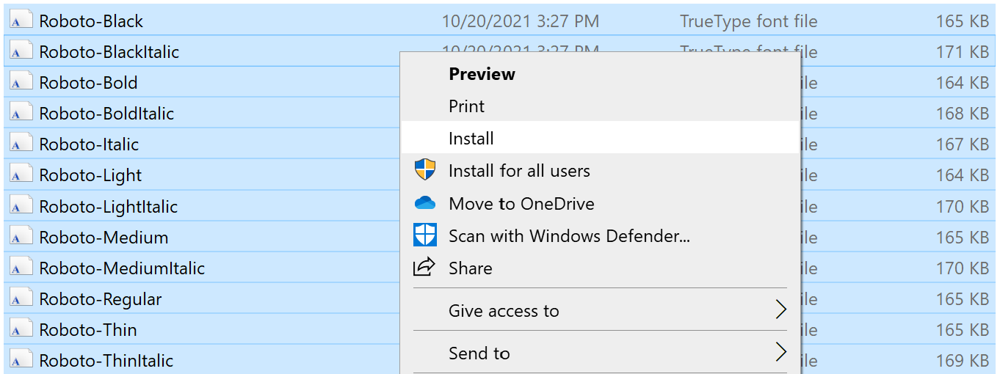

James Seddon
Are you a Brookings employee with a company-owned Windows laptop?
If so, the ggbrookings package will not work right out of the box due to Carbon Black. Read on for a workaround solution.
Step 0: Is this still an issue?
Check if the following is still necessary by running ggbrookings::import_roboto(). If you get a Carbon Black pop-up, or get a cryptic error message, it is indeed still an issue.
Step 1: Install Roboto again.
First, go to this link and hit “Download Family” in the top right hand corner. Open the downloaded file, unzip, and then select all of the .ttf files, and then right-click. Hit Install (see below). Do not Install for all users.

Step 2: Locate these files
Navigate to C:/Users/[YOUR USERNAME]/AppData/Local/Microsoft/Windows/Fonts/. Check that you see all Roboto fonts installed, and then proceed on to the next step.
Step 3: Install and load showtext
Run the following commands:
# Install showtext, a font-handling package
install.packages("showtext")
# load this package
library(showtext)Then, run the following command and verify this is the output you see:
## [1] "C:\\Windows\\Fonts"If you do, proceed on to the next step.
Step 4: Adding the font
Unfortunately, you will have to copy and paste this solution into the top of your document for execution every time you restart R.
Replacing your username in lieu of [YOUR USERNAME], removing brackets, run the following:
# First, add an additional font path
font_paths("C:/Users/[YOUR USERNAME]/AppData/Local/Microsoft/Windows/Fonts/")Then, run this command to add Roboto to the list of available fonts:
font_add("roboto", regular = "Roboto-Regular.ttf",
bold = "Roboto-Bold.ttf",
italic = "Roboto-Italic.ttf",
bolditalic = "Roboto-BoldItalic.ttf")Step 5: Telling R how to render
The next step depends on whether this is an R script (.R file) or an RMarkdown script (.Rmd file). Yes, this is annoying. My solution comes from the creator of the package, and can be found here.
If this is an R script, add this at the top of the document:
# This tells R what engine to render under (sort of). It's important this is inserted before any graphics rendering.
showtext_auto()
# This corrects sizing issues that occur when rendering.
showtext_opts(dpi = 300)Note that the showtext_opts() command will make your plots look strange when viewing in the plots window in RStudio. Adjusting this number may make it less weird, but will cause the final output (ggsaves, etc) to look wrong when saving as a file.
Technically, manually adjusting the dpi in ggsave means that you also need to adjust the dpi above; ggsave defaults to 300, hence the value above.
If this is an R Markdown document, do this instead:
The solution is much simpler.
In the r setup chunk where options are set, add the following option (while making sure to also add the code from Step 4 after loading your libraries):
knitr::opts_chunk$set(fig.showtext=TRUE)Step 6: One More Thing
You should be all set up!
You can now use Roboto in ggbrookings, provided that you also set the following option each time you call theme_brookings():
# set base_family = "roboto" in your ggplot command
your_plot +
theme_brookings(base_family = "roboto")While this is annoying, it is a trivially easy workaround after being set up once. Remember that you will need to run Step 4 and 5 each time you reopen R, and include Step 6 in your theme_brookings() function call.
For any questions, feel free to email James Seddon at: jseddon at brookings.edu.